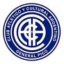
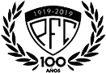
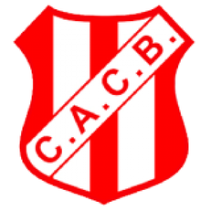
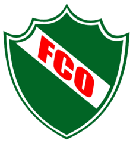

Historias futboleras
Bienvenidos a la pagina principal sobre historias de los clubes piquenses
Home
Aca se presentaran las historias del todos los clubes piquenses.

Club Atlético y Cultural Argentino

Pico Futbol Club
Club Sportivo Independiente

Costa Brava

Ferro Carril Oeste